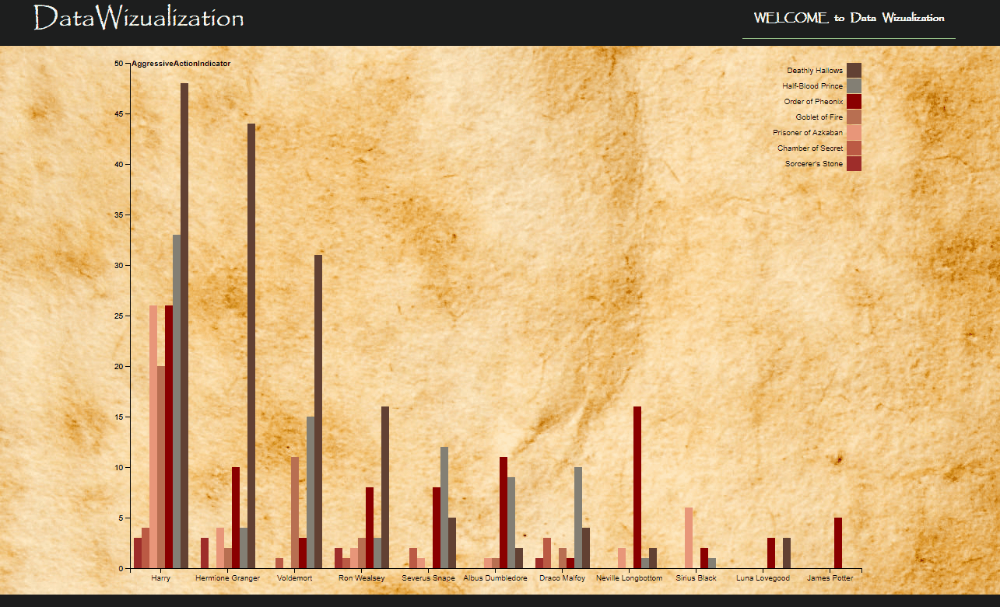
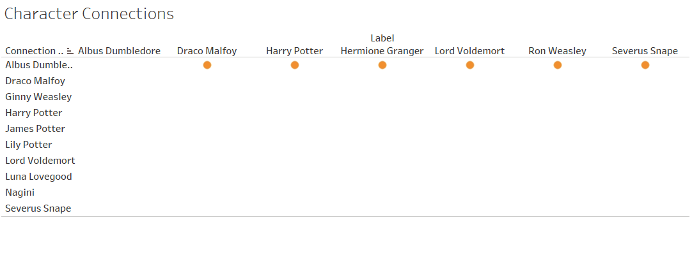

Article
The series of ‘Harry Potter’ have added magic to lives of many, adults or kids, we all have been mesmerized (and continue to be) by the wizarding world spun around by JK Rowling. To some, it has been like the best friend that’s never abandoned them, while for some, it serves as constant reminder that hope preserves even in the darkest times.
Being Harry Potter fans at heart, we decided to choose the theme for our data visualization project around the series’ fan fiction. The primary focus of the project was on developing an intuitive visualization system with engaging transition technique. We made use of ‘Parallax Scrolling Technique’ in our project to give an illusive effect to the appearance of the content on the web page and grab users’ attention between the data visualization graphics.
Dataset
The data visualization for our project is based on two different datasets for the two main categories of data visualization as explained below:
Character Viz
In our visualizations we plan to add animated transitions using Parallax scrolling technique. In addition to this, we plan to use the essence of this transition technique while loading each of the visualization on the web dashboard. The dataset we used for this visualization basically contains an Aggressive Quotient for the characters throughout the seven parts of the series. The data revolves around agentive actions by each character e.g. someone doing something to someone else. It was interesting to see using this visualization how the graph of characters’ nature changed through the series from positive to being evil later or vice versa.
Below is a sample representation of the visualization we created using the transition technique in D3:

Relations between Characters Viz
In this visualization, we plan to represent relations between the main characters of the series. This visualization primarily focuses on the network of the link or relationship that exist between the characters in the Harry Potter universe. The users can filter the characters they want to visualize the relation between using the filter option. We have created a graph matrix depicting the relationships between the characters; the circle/dot indicates a link or relationship between the respective characters. For this visualization we have used a dataset containing about 178 characters from the Harry Potter Universe. It basically takes a list of Harry Potter names and links and scrape the character's image and their connections with other characters from a Harry Potter wiki website.
Below is a sample representation of the visualization we created:

Parallax Scrolling Technique
Animation is one of the compelling approach used today to keep the users engaged to the data visualization graphics. In our project, we have tried to incorporate this using Parallax implementation. technique uses the concept of layering of images over each other such that it appears slightly 3-dimensional. Parallax is implemented primarily in HTML, JavaScript and jQuery. Some of what can be done in JavaScript is instead implemented on the server simply for performance. That is, it is a client-side only web application.
Below is a sample representation of General Parallax Scrolling –

The overall look and feel for our Visualization Dashboard is Hogwarts themed with various elements from the series. The approach used for the narrative style here is “Story telling” approach. This will help the audience to connect with our story and keep them engaged. We have also added some gif centered around the series and embedded the theme music to our visualization dashboard. We have incorporated the visualizations on a site designed using Parallax Scrolling technique. We hope you enjoy having a look through the visualizations created by us.
PS: We’re still waiting for our letter from Hogwarts!